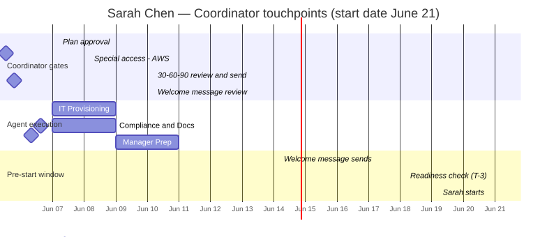

For the technical walkthrough
How it's built

Reads left to right: the Onboarding Assistant (the orchestrator — a deterministic state machine) delegates a task to each specialist agent and gets a typed-JSON result back, and writes the human-facing messages itself with GPT-4o. Each agent calls its own function tools (the deterministic actions we built), which interact with the real systems on the right — Okta, Google Workspace, Calendar, Gmail, Slack, DocuSign, Jira (mock JSON now, real APIs in prod). Those systems report status back (dashed) to the T-3 readiness check. Amber ✓ = a human-in-the-loop gate, one on every agent and the Assistant.

End to end, top to bottom. Center = the flow; left = your decisions (the five HITL gates); right = the tools & systems each agent uses. IT and Compliance run in parallel; amber = a gate where the flow pauses for your approval; the T-3 readiness check is the day-one safety net.

Your touchpoints over time — a few decisions, not fifty emails.
In production
The demo mocks every integration as JSON so the walkthrough stays on the agent reasoning. This is what the same architecture connects to in a real Google Workspace environment — the agents, handoffs and gates don't change, only what sits behind each tool (build notes §18 has the full mapping).

Production system map — Okta (SCIM birthright + access requests), Google Calendar & Gmail, Slack, and Atlassian Jira Service Management for the IT help desk, with DocuSign for documents. Solid lines are the provisioning flow; dashed lines are escalations and status webhooks.
Design principles
- The orchestrator is a state machine, not an agent. Routing is a rule, not a judgment — so it stays deterministic. That's the answer to "why agents at all?"
- Agents reason, tools execute. Deterministic facts and actions live in tools; genuine judgment lives in agents.
- Handoffs are typed JSON contracts. Pydantic catches hallucinations and schema mismatches at the boundary.
- Human-in-the-loop at judgment moments. Five decision gates + one alert — placed where judgment is needed, not at mechanical steps.
- Grounding stops hallucination. Each agent gets the real catalog for the hire, so it reasons over facts.
- Tested without calling the LLM. Agents are dependency-injected, so routing tests run against deterministic fakes.
- Pause/resume over HTTP. The orchestrator is a generator: it freezes at every gate and resumes when you click — which is how a human stays in the loop across a web request.
Stack
OpenAI Agents SDK (Python)GPT-4oPydantic — typed contracts
Python state machineFastAPI — thin backendVanilla JS — no build steppytest
Diagrams are the live project diagrams from docs/diagrams/.